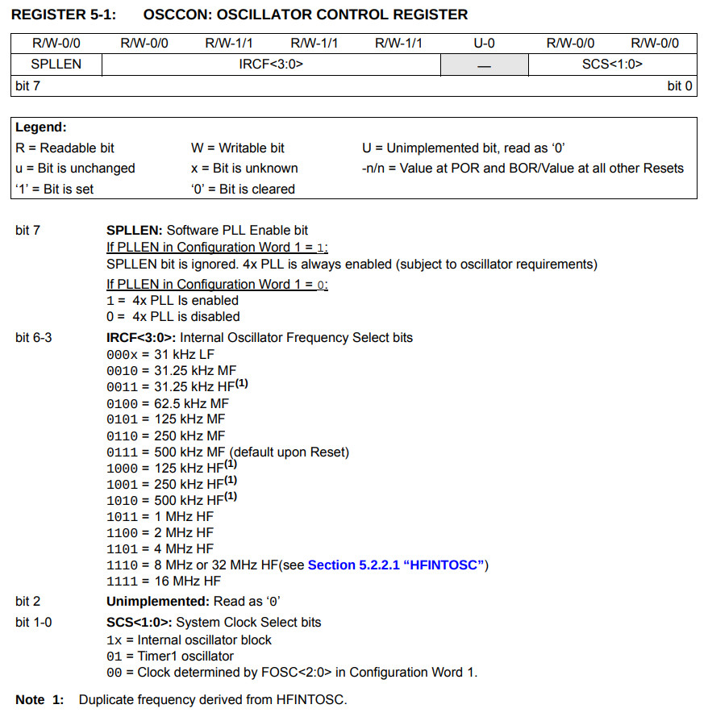

OSCCON可以控制內部振盪器的頻率

list p=12f1822, r=hex
#include <p12f1822.inc>
__config _CONFIG1, _FOSC_INTOSC & _WDTE_OFF & _MCLRE_OFF
__config _CONFIG2, _LVP_OFF
#define tmp1 0x20
#define tmp2 0x21
org 0x0000
goto start
org 0x0100
start:
banksel OSCCON
movlw b'01101010'
movwf OSCCON
banksel TRISA
clrf TRISA
loop:
banksel PORTA
bcf PORTA, 0
call delay
banksel PORTA
bsf PORTA, 0
call delay
goto loop
delay:
banksel tmp1
movlw 0xff
movwf tmp1
movwf tmp2
decfsz tmp1, f
goto $-1
decfsz tmp2, f
goto $-3
return
end
編譯
$ gpasm main.s
完成